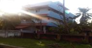
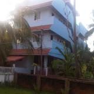

Welcome to St. Jude Womens Hostel

St. Jude Hostel is situated in Thevara in Ernakulam District. It is exclusively for ladies and working women.
!!!#ENTER YOUR CONTENT HERE !!!! JUSTIN !!!#!!!!SPOT "1" !!!!.
About Us
The hostel was established in 2009, It is conveniently located near St. Jude Church and Secrad Heart College, Thevara. We provide accommodation and food for women. Wheather you are looking for a temporary accommodation or on a long term basis, you can come and visit us. We provide accommodation for working women, students and job seekers. Paying guest accommodation is also available on monthly, weekly or daily rental basis.
We also accommodates women working on night shifts if they produce relevant identity and address proof, passport size photograph and an authentic introduction letter from their employer indicating details of their journey to and from the organisation, including routes, mode of transport and time of journey. It is compulsory that these inmates should have a local guardian.
Testimonial
St. Jude Women's Hostel is planned as a state-of-the-art hostel for women.The management has taken all efforts to provide a pleasant and safe living space, with quality facilities and discipline to match the requirements of new age women..
Service Overview
Here are some of the highlights of the Hostel
* Gated hostel with round the clock security * Single or shared accommodation with 2, 4, 6 or 8 persons * Attached western toilet and bath room in all the rooms * Cable TV provided in the entertaintment room * Personally caring warden available 24 hours * Delicious and veriety food prepared by well experienced cooks * All meals are cooked with utmost care in a hygienic kitchen, without compromising quality, taste and variety * Extended hours for food in the hostel to accommodate software / call center professionals. * Paying guest accommodation available on daily, weekly or monthly basis. * Car and Two wheeler parking. * Short walk to Sacred Heart College, Thevara * Bed, pillow, cupboard for every inmate * Common study room with plugs for laptops * Calm and quite location with water front view from the top floor. * Laundry and Ironing service * 24 hour water supply * Additional water purifiers in every floor * Smoke-free and pet-free for your comfort * Short walk to the churches and templesOur Galleries
Contact Information
Our Address:
St. Jude Women's hostel, Near St. Jude Church Thevara, Ernakulam Cochin 682 013, Kerala, India, India.
Phone: 9846 182820
Email: emailjomon@gmail.com .


{kind=link}
{kind=link}
{kind=link}
{kind=link}
{kind=link}
{kind=link}